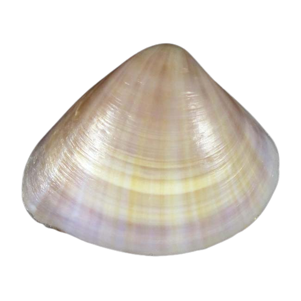

×
Mactra cuneata (Gmelin, 1791)
Wedge trough shell
Venerida
Mactridae
Not Evaluated
Found in intertidal areas in sand. Also in muddy-sand bottoms. Littoral to sublittoral.
Embryos develop into free-swimming trocophore larvae, succeeded by the bivalve veliger, resembling a miniature clam.
Not Available
Indo-West Pacific: from East Africa to Melanesia; north to southern Japan and south to Queensland and New Caledonia.